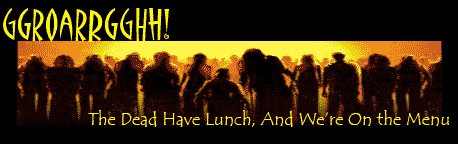
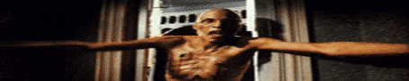
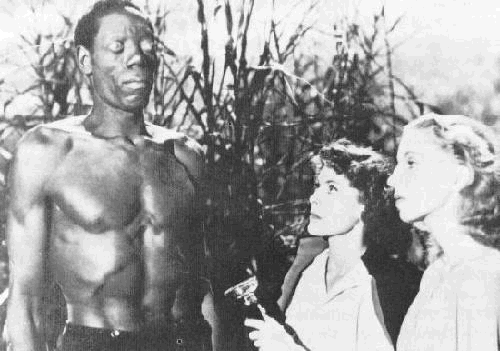
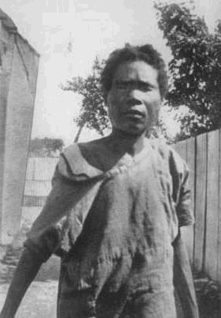

And then, there’s the unpleasant Dawn of the Dead – the end of times in which we are all eaten up by flesh-hungry zombies. Could it really happen?
One day, you wake up to find the little girl next door in your hallway. She
just stands there, quietly looking at you. You rub your eyes and begin to ask
her what’s up. But then… she jumps you.
Pretty soon, the world is overrun by zombies just like
you. There are living dead in the streets. Living dead in the shops.
Living dead in every house. Living dead gathering around every last
band of normal humans. On the internet, there’s
a pretty amazing computer
simulation that shows what would happen if the living dead were to really
overrun us. Bottom line: humans wouldn’t stand a chance!
The zombie scenario comes in many forms. In some movies and books, a virus turns us into living dead. In others, a chemical mishap wakes up the deceased. In still others, it remains unclear what causes all the trouble. And maybe that’s all the better. Because no matter how you look at it, corpses that walk and kill are of course somewhat… unrealistic.
Zombies defy all logic. How can someone who has been injured so badly that he can no longer live still, ehm… live? How can a rotting cadaver still stumble about and kill you? Why would it go after living humans in the first place? Wouldn’t it be easier if it just cooked itself a meal? Or go to Burger King: with a bad breath like that, they’ll surely let you go first.

Zombies:
the facts
Fortunately, there is no known condition that turns dead people into
cannibalistic killer corpses. Usually, dead is dead.
Indeed, some of us have made it back to the land of the
living, for example after reanimation in the hospital. But usually they
don’t wake up with a particular appetite for raw human flesh -- even though
they have good reason for that, considering the food they serve in hospitals.
Yes, there are a few rare conditions that transform people into dangerous,
raging psychopaths – the Indonesian disorder called ‘amok’ is the most
well-known. But diseases like that have nothing to do with death nor
cannibalism – and they aren’t contagious at all.
Still, movies, books, comics and computer games have told and retold the
zombie scenario again and again. One of the earliest examples is Edgar Allen
Poe’s short story ‘The Facts in the Case of M. Valdemar’ (1844), in
which a terminally ill guy slowly turns into a living but rotting corpse after he is being
kept from dying by hypnosis. Among the most recent examples are the
blockbusters ‘Dawn of the Dead’ (2004) and ‘28 Days Later’ (2002) –
the storyline we started this page with comes from Dawn of the Dead.
|  |
|
|
At
the moment, there are at least 91 zombie movies we know of (see this
list). And the theme has many variations, ranging from the Body
Snatchers-movies and The Borg from Star Trek to even The Matrix, in which
humans are turned into living dead batteries.
So: why is it so popular? Why do zombies scare the hell out of us? Obviously,
much of it has to do with our instinctive fear of death and our in-built
disgust of dead bodies. Corpses and cannibalism – these are two of our
deepest taboos, and breaking them scares the shit out of us.
On a deeper level, some of it has to do with mass psychology and sociology. In
western society, freedom, individualism and being able to make up your mind
are considered the highest goods. Zombies are quite the opposite, the
nightmare to the dream. They are the ultimate de-humanized beings.
And then there’s the link with voodoo. Originally, ‘zombie’ is the African word for a conjured slave. Several West-African religions share the belief that a sorcerer can transform someone into a slave by stealing his memory, his awareness and his will. No rotting corpses involved – just an average guy, turned into a will-less slave.
In American slave times, this idea mixed with ancient European superstitions. For example, in New Orleans around 1800, white and black folks alike feared a 'zombie' that was said to haunt the streets. But the zombie involved had nothing to do with rotting corpses. It was the ghost apparition of a deceised French officer holding his head under his arm!
On the isle of Haiti, the word ‘zombie’ took another twist. In 1801, the Haitian slaves revolted and kicked the whites off of their island – interestingly, their leader was a conjurer-priest, Toussaint L'Overture, who promised his followers they wouldn’t die during the uprising.
|  |
|
|
After
that, the former slaves founded the voodoo faith, a religion that is
part catholic, and part African. Just like in Africa, Haitian voodoo-followers
believe you can turn someone into a zombie, as a means of punishment. In
Haiti, voodoo priests used and use puffer fish poison (‘tetrodotoxin’) to
accomplish this. The poison, administered as a powder, produces a deep,
dead-like coma first, and then a lethargic, vegetative state of non-being.
It was only in the 1960s Hollywood came up with the modern day zombie: the one
that bites. The watershed movie that gave the zombies their new image was the
legendary horror classic ‘Night of the Living Dead’ (1968).
In the meantime, quite a few real ‘zombies’ live in
Haitian mental hospitals. But they don’t bite. They are normal,
living people, turned into plants by vicious poison. So in fact, we should
feel sorry for the zombies. Those poor, poor living dead!